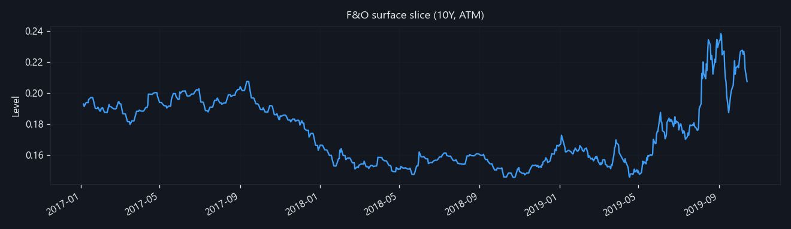
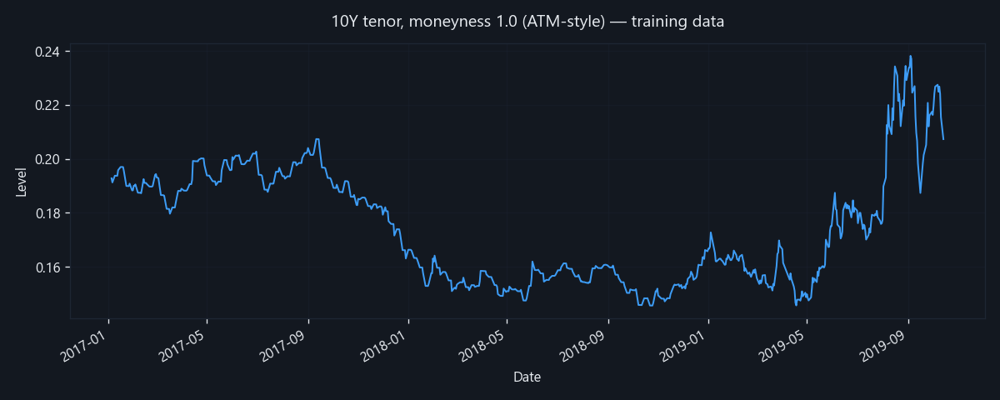
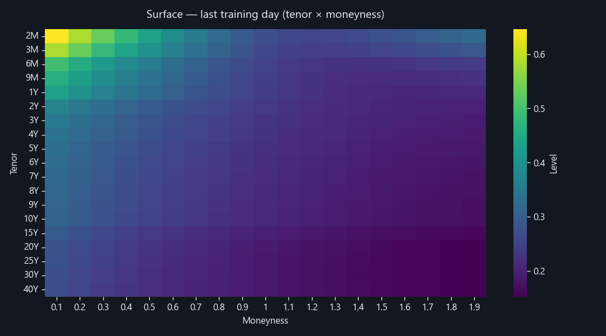
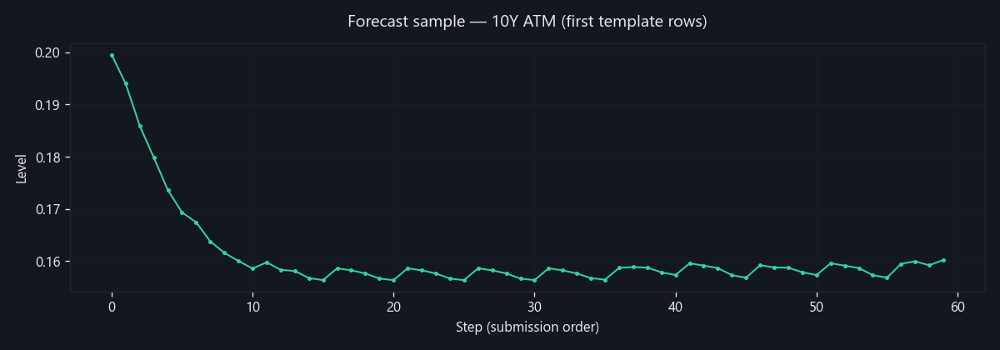

Stock Trend Forecasting (F&O)
Learn how options and futures (F&O) desks think about risk: prices and hedges depend on an entire surface of values across time to expiry (tenor) and moneyness (how far the strike is from the spot). This project turns daily surface history into a forecasting model so you can explore patterns and out-of-sample predictions — useful for quant research, risk dashboards, and interview portfolios.
Public demo URL — share or paste into your portfolio:

training_data.csv (no JavaScript required).Overview
The training file holds one row per trading day and tenor (e.g. 2M, 10Y).
Columns 0.1–1.9 are moneyness (strike vs spot in standardized units). The
notebook reshapes this into a long panel, adds lags and rolling means per (tenor,
moneyness), mixes in calendar features, and trains
HistGradientBoostingRegressor (scikit-learn). After a time-based validation window, the
model fills the submission template for future dates. This site shows PNGs for every
visitor, interactive Plotly charts when data.json loads,
training_data.html for quick tables +
describe(), and training_profile.html for the
full ydata-profiling report (histograms, correlations, alerts — like Pandas Profiling).
All live under docs/.
Educational project only — not investment advice.
Try the demo
Pick a date, tenor, and moneyness. Values come from
embedded demo-data.js (and match demo_lookup.json on the server), built from
predictions_filled.csv plus the last 150 trading days of training. Regenerate
with python scripts/build_docs_assets.py.
Surface lookup
Date:
10/15/2019 (first forecast day in the template) · Tenor: 10Y · Moneyness:
1 (near ATM).Other ideas:
1/6/2020 with 2M and 0.5; or a recent training day from
the date dropdown with any tenor/moneyness pair.
Works when you open index.html directly from disk (file://) thanks to
demo-data.js. Interactive Plotly charts still need http:// or GitHub Pages so
data.json can load.
Charts
Top: static PNG. Below: interactive Plotly when data.json
loads.
Historical slice — 10Y tenor, moneyness 1.0
How the “ATM” point evolves over the training period.
Static image (PNG)

Interactive chart (Plotly)
Surface on last training day
Tenor × moneyness heatmap for the final date in training_data.csv.
Static image (PNG)

Interactive chart (Plotly)
Forecast sample — 10Y ATM
Out-of-sample segment when predictions are available.
Static image (PNG)

Interactive chart (Plotly)
Method & stack
Time-ordered panels: lags use only past observations; multi-day forecasts are recursive (predicted days feed the next day’s features).
- Panel features: lag-1, lag-5, 5-day rolling mean per (tenor, moneyness).
- Calendar features: day-of-week, month, days since series start.
- Validation: hold out the last N trading days; refit on full history for submission.
Tech stack
Regenerate images, training_data.html, training_profile.html,
demo_lookup.json, and demo-data.js:
python scripts/build_docs_assets.py